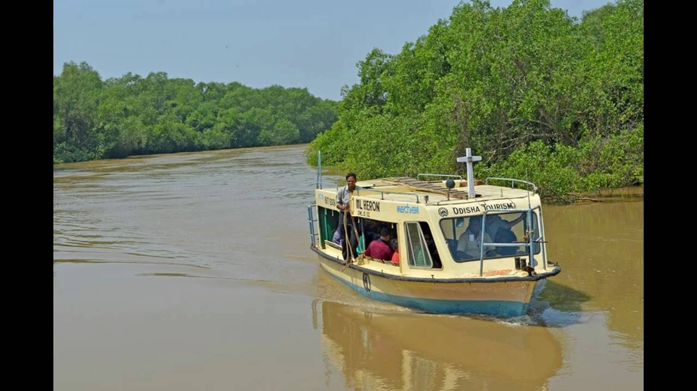
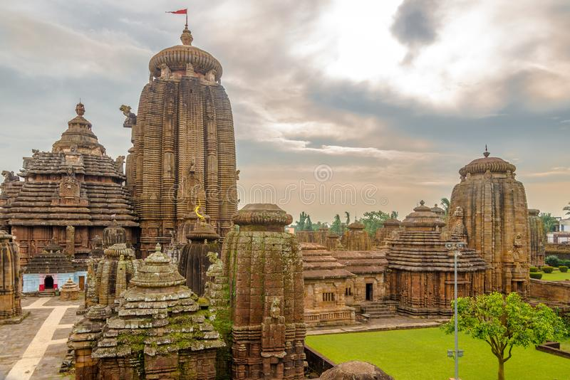
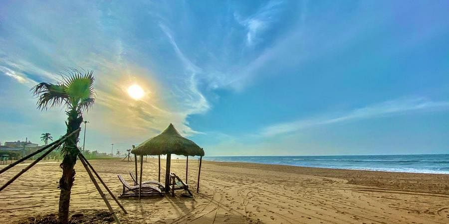
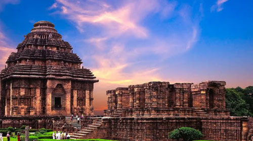
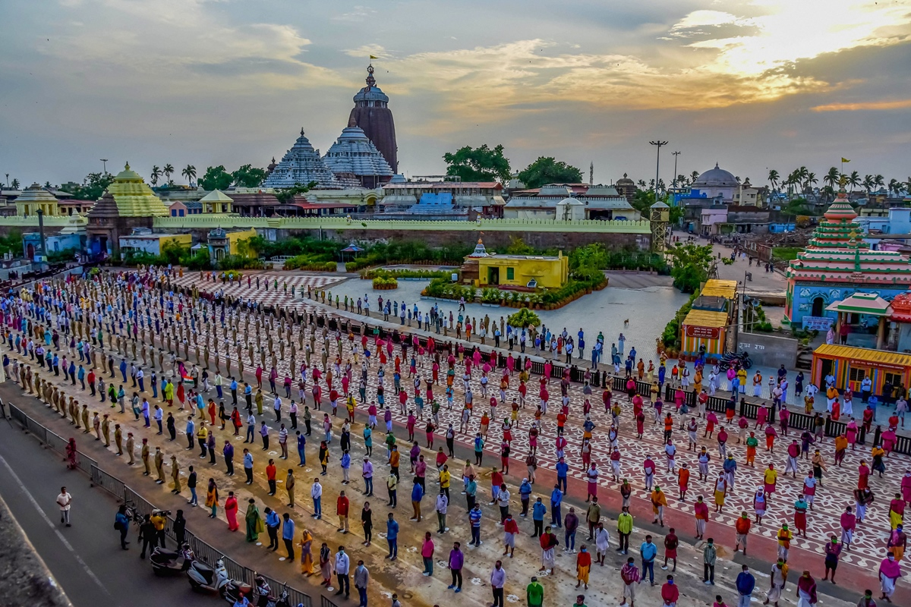

BHITARKANIKA
Bhitarkanika National Park is a 145 km² large national park in northeast Kendrapara district in Odisha in eastern India. It was designated on 16 September 1998 and obtained the status of a Ramsar site on 19 August 2002. The area is also been designated as second Ramsar site of the State after the Chilika Lake.
BHUBANESWAR
Bhubaneswar is an ancient city in India’s eastern state of Odisha, formerly Orissa. Many temples built from sandstone are dotted around Bindu Sagar Lake in the old city, including the 11th-century Hindu Lingaraja Temple. Outside Rajarani Temple are sculpted figures of the guardians of the 8 cardinal and ordinal directions. Jain antiques, weaponry and indigenous pattachitra paintings fill the Odisha State Museum.
CHILIKA LAKE

Chilika Lake is a brackish water lagoon, spread over the Puri, Khurda and Ganjam districts of Odisha state on the east coast of India, at the mouth of the Daya River, flowing into the Bay of Bengal, covering an area of over 1,100 km². It is the biggest lake of India after Vembanad Lake.
GOLDEN BEACH
Puri Beach or the Golden beach is a beach in the city of Puri in the state of Odisha, India. It is on the shore of the Bay of Bengal. It is known for being a tourist attraction and a Hindu sacred place.
KONARK
Konark is a medium town in the Puri district in the state of Odisha, India. It lies on the coast by the Bay of Bengal, 60 kilometres from the capital of the state, Bhubaneswar. It is the site of the 13th-century Sun Temple, also known as the Black Pagoda, built in black granite during the reign of Narasimhadeva-I.
PURI
Puri is a coastal city and a municipality in the state of Odisha in eastern India. It is the district headquarters of Puri district and is situated on the Bay of Bengal, 60 kilometres south of the state capital of Bhubaneswar.